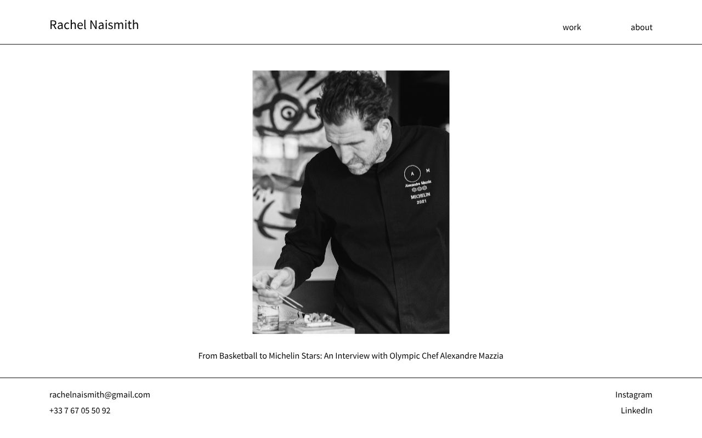
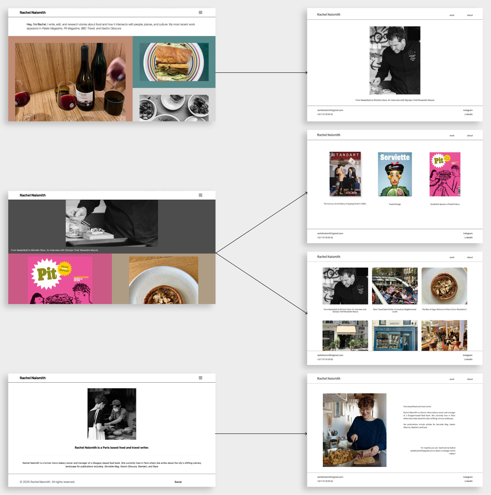

Rachel Naismith - Website Rework
Food and travel writer's website rework
UX/UI Designer | 2025
Rachel Naismith approached this redesign with the goal of modernizing her online presence and creating a portfolio that feels timeless, professional, and easy to navigate. The updated structure aims to showcase her work clearly while maintaining a clean, editorial aesthetic that reflects her writing style.

Overwiev:
Rachel’s previous website lacked visual hierarchy and organization, making it difficult for visitors—such as editors, collaborators, and readers—to quickly understand her areas of expertise or explore her recent publications. My goal was to simplify the experience, improve content discoverability, and create a polished, visually simple design that supports her personal brand and is easy to maintain.
Key considerations:
- Unclear navigation made it difficult for users to understand the scope of her work.
- Inconsistent use of color and layout resulted in a visual experience that felt unintentionally playful rather than professional.
- No obvious contact path, which could limit opportunities for potential clients or editors wanting to get in touch.
- The original design presented several UX issues
Before and after

Improvements
- The landing page now highlights recent articles, improving content discoverability and reducing user friction.
- Reorganized content into “Print” and “Online” categories, giving users a clear mental model of the writer’s portfolio and improving navigation.
- Introduced a minimal, grid-based layout to convey professionalism, reduce cognitive load, and ensure timeless visual appeal.
- Contacts added on the page footer to make contacting the writer seamless.
While this was a self-initiated concept project, the redesign demonstrates clear UX and business value:
- Improved readability and hierarchy, allowing visitors to find relevant articles faster
- More polished personal brand, aligned with Rachel’s writing tone
- Streamlined content architecture, reducing user friction
- Clearer messaging, helping editors understand her strengths at a glance